继电器像开关一样，可以串联或并联在电路中执行简单的逻辑任务。这种继电器的组合叫做逻辑门(logic gates)。继电器优于开关之处就在于，继电器可以被其他继电器所控制，而不必由人工控制。这就意味着，这些简单的逻辑门组合起来可以实现更复杂的功能，例如一些简单的算术操作。我们用 0 表示开关断开，用 1 表示开关闭合。以下器件都由继电器构成。
缓冲器
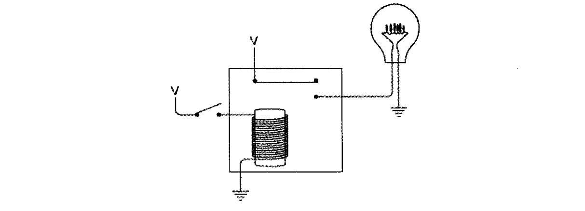
这也叫做缓冲器(buffer)，可用如下符号表示。缓冲器的输入与输出是相同的。
与门
下图电路的两个继电器串联。当两个开关都断开时，灯泡不发光。
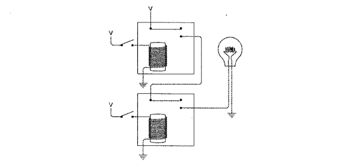
只闭合上面或下面的开关，灯泡仍然不发光。
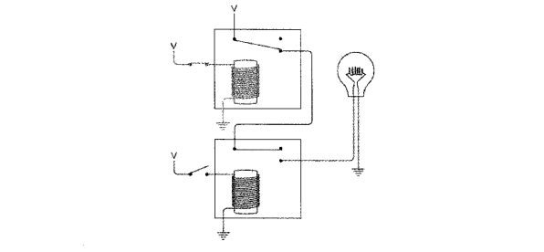
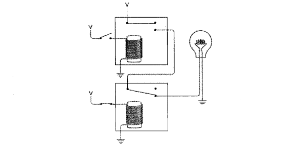
同时闭合两个开关，灯泡亮了。
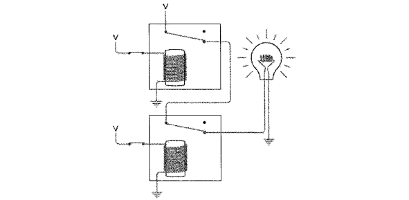
电气工程师用如下专门的符号表示一个与门。
与门开关的关系可用下表的与运算来描述。
| AND | 0 | 1 |
|---|---|---|
| 0 | 0 | 0 |
| 1 | 0 | 1 |
或门
下图电路的两个继电器并联。当两个开关都断开时，灯泡不发光。
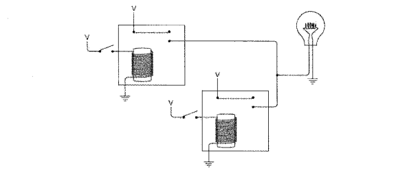
只闭合上面或下面的开关，灯光均会发光。
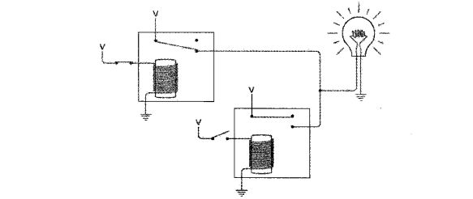
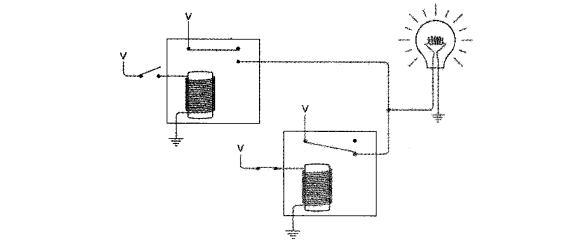
同时闭合两个开关，灯泡亮了。
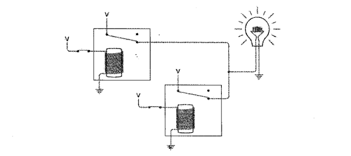
电气工程师用如下专门的符号表示一个或门。
或门开关的关系可用下表的或运算来描述。
| OR | 0 | 1 |
|---|---|---|
| 0 | 0 | 1 |
| 1 | 1 | 1 |
反向器
下图的电路使用了另一种连接方式，在开关断开时灯泡被点亮，与之前的电路相反。以这种方式连接的继电器叫做反向器(inverter)。反向器不是逻辑门。
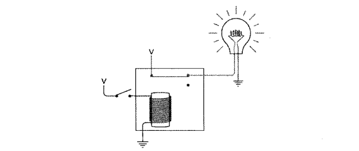
反向器可用如下专门符号来表示。
或非门
两个继电器全部断开时，灯泡发光。
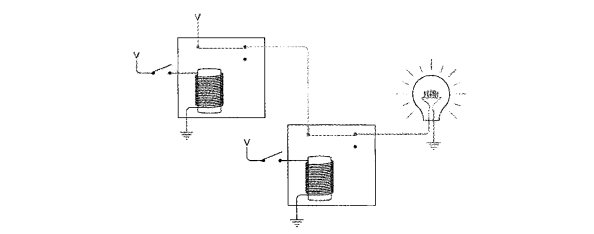
只闭合上面或下面的开关，灯泡均会熄灭。
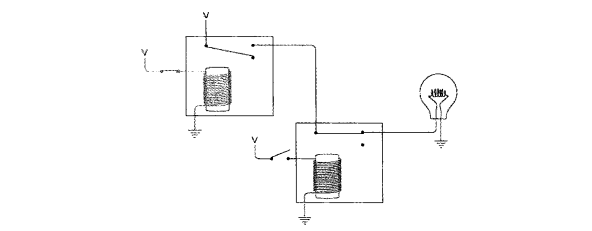
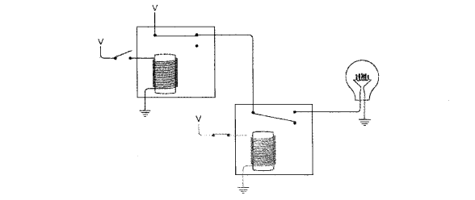
同时闭合两个开关，灯泡熄灭。
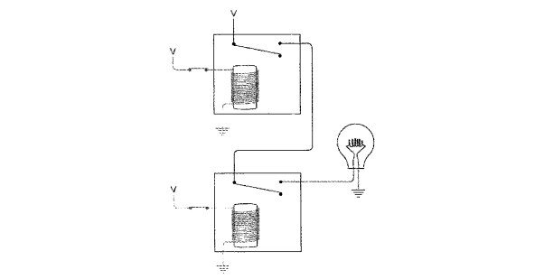
或非门用以下符号表示，除去输出部分的小圆圈，这个符号与或门非常相像。
小圆圈表示“反向”，所以或非门也可以用下面的符号表示。
或非门的结果与或门相反，或非门的关系可用下表来描述。
| NOR | 0 | 1 |
|---|---|---|
| 0 | 1 | 0 |
| 1 | 0 | 0 |
与非门
两个断电器全部断开时，灯光发光。
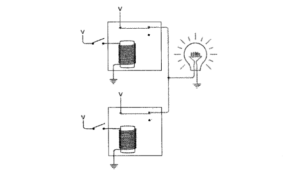
只闭合上面或下面的开关，灯光仍然发光。
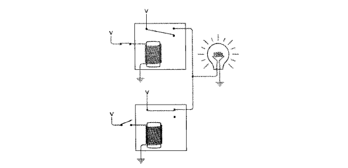
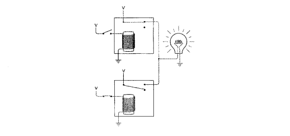
同时闭合两个开关，灯光熄灭。
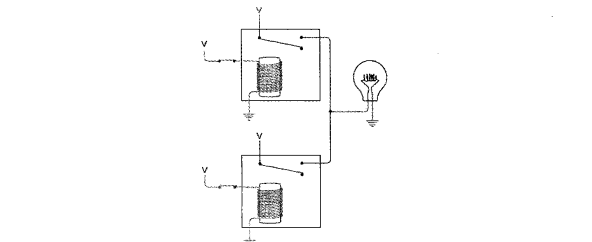
与非门的符号如下，和与门类似，但在输出部位多了一个小圆圈，意思是输出和与门正好相反。
与非门的关系如下表所示。
| NAND | 0 | 1 |
|---|---|---|
| 0 | 1 | 1 |
| 1 | 1 | 0 |
异或门
将或门和与非门以与门方式连接在一起，就得到异或门(XOR)，如下图。
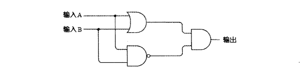
| 输入 A | 输入 B | 或门输出 | 与非门输出 | 与门输出 |
|---|---|---|---|---|
| 0 | 0 | 0 | 1 | 0 |
| 0 | 1 | 1 | 1 | 1 |
| 1 | 0 | 1 | 1 | 1 |
| 1 | 1 | 1 | 0 | 0 |
上表整理如下。
| XOR | 0 | 1 |
|---|---|---|
| 0 | 0 | 1 |
| 1 | 1 | 0 |